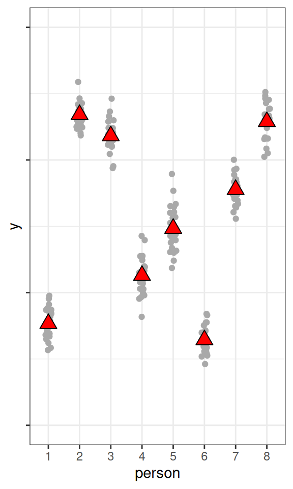

20 Multilevel Models
In this note, we’ll talk about multilevel models. To start, we have already seen a basic version of a multilevel—when discussing hierarchical models with partial pooling. There, we consider a binomial model with a parameter \(\theta_j\) for each person, and consider a common distribution for all the \(\theta\) parameters. A multilevel model is a model where we can have one or more cluster-specific parameters for each cluster (e.g., person, group, etc.), and these parameters are assumed to come from some common distributions.
We will use a within-subject example in this note, starting with a few data points to fit a model equivalent to a repeated-measure ANOVA, and then generalize to a multilevel regression model with varying intercepts and slopes. The latter is also called a growth curve model.
Naming of Multilevel Models
Multilevel models are very general and have been used in many different areas of research. Depending on the field of study, they are also called by the following names (not an exhaustive list):
- Hierarchical linear models
- Mixed-effects models
- Random-coefficients models
Special Cases of Multilevel Models
The following are some special cases or specific applications of multilevel models:
- Dependent-sample \(t\)-test
- Random-effect ANOVA
- Repeated-measure ANOVA
- Variance components models
- Growth curve models
- Generalizability theory
- Random-effect meta-analysis
20.1 Examples of Clustering
There are many different forms of clustering in data across different disciplines, including
- Students in schools
- Clients nested within therapists within clinics
- Employees nested within organizations
- Citizens nested within employees
- Repeated measures nested within persons
They can be represented in network graphs like Figure 20.1 (students within schools):
Sometimes, there is more than one level of clustering, like students clustered by middle and high schools. This is called a crossed structure, as shown in Figure 20.2, where we say that students are cross-classified by both middle and high schools. Another typical example in psychological experiments is when participants see multiple stimuli, each as an item, so the observations are cross-classified by both persons and items.
The scenario of repeated measures nested within persons is particularly relevant, as essentially all longitudinal data are multilevel and should be modelled accordingly. It allows one to build individualized models to look at within-person changes, as well as between-person differences of those changes. Techniques such as dependent-sample \(t\)-test, repeated-measures ANOVA, growth curve modeling, and time-series analyses, can all be represented in the multilevel modeling framework. Therefore, some authors, such as @ mcelreath2020, suggest that MLM should be the default model we use for analyses rather than regression.
20.2 Data
We will use the data set sleepstudy from the lme4 package, a popular package for frequentist multilevel modeling. The data set contains 18 participants, each with 10 observations. It examines the change in average reaction time daily with increasing sleep deprivation. See ?lme4::sleepstudy for more of the description. Here is a plot of the the Reaction variable:
This data set has clustering because it is repeated measures nested within persons. For the initial example, we will only take the first three time points (Days 1-3).
Long-Format Data
Note that the data above is in long format, which is typically required for multilevel analysis. Here, each row of the data represents one observation, so there are multiple rows for each person. This is in contrast to wide format, where each row represents one person and has multiple columns for each observation.
Here is a spaghetti plot of each individual over the three days:
ggplot(sleep3, aes(x = Days, y = Reaction)) +
geom_point(size = 0.5) +
geom_line(aes(group = Subject)) +
scale_x_continuous(breaks = 1:3) +
ylab("Reaction Time (ms)")The plot shows a general increasing trend of reaction time.
20.3 Analysis 1: Time as Nominal
This analysis is analogous to a repeated-measure ANOVA. Here, our interest is simply whether there are any differences across time, without any assumption on any linear or nonlinear trends. In other words, we treat time as a nominal variable.
20.3.1 Model
We use \(\text{Reaction}_{ij}\) to represent the reaction time for the \(j\)th person on the \(i\)th day.
\[ \begin{aligned} \text{Reaction}_{ij} & \sim N(\mu_{ij}, \sigma) \\ \mu_{ij} \sim N(\gamma_i, \tau) \end{aligned} \]
- \(\mu_{ij}\): the expected reaction time for person \(j\) on day \(i\).
- \(\sigma\): the within-person error.
- \(\gamma_i\): the mean reaction time across participants on day \(i\).
- \(\tau\): the between-person variance on a particular day.
Assumptions
The above model assumes:
- Normality
- Homogeneity of error variance across observations
- Homogeneity of variance across persons
# Treat Days as a nominal variable
sleep3$Days_cat <- factor(sleep3$Days)
m1 <- brm(Reaction ~ 0 + Days_cat + (1 | Subject),
data = sleep3,
seed = 2225,
file = "11_m1")
m1 Family: gaussian
Links: mu = identity; sigma = identity
Formula: Reaction ~ 0 + Days_cat + (1 | Subject)
Data: sleep3 (Number of observations: 54)
Draws: 4 chains, each with iter = 2000; warmup = 1000; thin = 1;
total post-warmup draws = 4000
Multilevel Hyperparameters:
~Subject (Number of levels: 18)
Estimate Est.Error l-95% CI u-95% CI Rhat Bulk_ESS Tail_ESS
sd(Intercept) 31.56 6.16 21.58 45.07 1.00 869 1371
Regression Coefficients:
Estimate Est.Error l-95% CI u-95% CI Rhat Bulk_ESS Tail_ESS
Days_cat1 264.32 8.43 248.27 281.08 1.00 600 719
Days_cat2 265.21 8.37 248.87 282.11 1.00 632 640
Days_cat3 282.98 8.37 266.77 299.18 1.00 615 702
Further Distributional Parameters:
Estimate Est.Error l-95% CI u-95% CI Rhat Bulk_ESS Tail_ESS
sigma 16.70 2.17 13.28 21.77 1.00 2120 2344
Draws were sampled using sample(hmc). For each parameter, Bulk_ESS
and Tail_ESS are effective sample size measures, and Rhat is the potential
scale reduction factor on split chains (at convergence, Rhat = 1).The model estimates the mean reaction time on each day, as well as the between-person and within-person variances. One can visualize the means:
conditional_effects(m1)One can compare this model to one where the mean reaction time is assumed equal across days:
m0 <- brm(Reaction ~ 1 + (1 | Subject),
data = sleep3,
seed = 2225,
file = "11_m0")
loo(m0, m1)Warning: Found 2 observations with a pareto_k > 0.7 in model 'm1'. We recommend
to set 'moment_match = TRUE' in order to perform moment matching for
problematic observations.Output of model 'm0':
Computed from 4000 by 54 log-likelihood matrix.
Estimate SE
elpd_loo -245.9 5.9
p_loo 15.4 2.8
looic 491.7 11.9
------
MCSE of elpd_loo is 0.2.
MCSE and ESS estimates assume MCMC draws (r_eff in [0.4, 1.6]).
All Pareto k estimates are good (k < 0.7).
See help('pareto-k-diagnostic') for details.
Output of model 'm1':
Computed from 4000 by 54 log-likelihood matrix.
Estimate SE
elpd_loo -239.2 4.6
p_loo 17.4 2.4
looic 478.3 9.2
------
MCSE of elpd_loo is NA.
MCSE and ESS estimates assume MCMC draws (r_eff in [0.4, 1.6]).
Pareto k diagnostic values:
Count Pct. Min. ESS
(-Inf, 0.7] (good) 52 96.3% 115
(0.7, 1] (bad) 2 3.7% <NA>
(1, Inf) (very bad) 0 0.0% <NA>
See help('pareto-k-diagnostic') for details.
Model comparisons:
elpd_diff se_diff
m1 0.0 0.0
m0 -6.7 3.4 LOO indicates that allowing a different mean reaction time for each day fits the data better.
20.4 Analysis 2: Growth Curve
We will now use all 10 time points, and try to fit a line/curve to the time trend. Figure 20.6 shows the changes across participants.
ggplot(sleepstudy, aes(x = Days, y = Reaction)) +
geom_point(size = 0.5) +
geom_smooth() +
# presented by person
facet_wrap(~Subject, ncol = 6)`geom_smooth()` using method = 'loess' and formula = 'y ~ x'As you can see, most people experience increases in reaction time, although there are certainly differences across individuals, such that each person has a different trajectory.
20.4.1 Intraclass correlation
With multilevel data, the first question is how much variation in the outcome is at each level. This is quantified by the intraclass correlation, which, for a two-level model, is defined by \[ \rho = \frac{\tau^2}{\tau^2 + \sigma^2} \] where \(\tau\) is the between-level SD, which is the SD of the cluster means (i.e., the variability of mean response time across persons in this example), and \(\sigma\) is the within-level SD (i.e., variability within a person, which is assumed constant across persons).
How Things Look With Different ICCs
The ICC represents the proportion of variance of the outcome that is due to between-level (e.g., between-group, between-person) differences
Code
set.seed(1)
fake_dat1 <- data.frame(
person = as.character(rep(1:8, 25)),
y = rnorm(200,
mean = rnorm(8, mean = 50, sd = 0.1),
sd = 10
)
)
pbase <- ggplot(fake_dat1, aes(x = person, y = y)) +
geom_jitter(width = 0.1, col = "darkgrey") +
stat_summary(
geom = "point", fun = mean,
size = 4, shape = 24, fill = "red"
) +
ylim(20, 80) +
theme(axis.text.y = element_blank())
pbase
fake_dat2 <- data.frame(
person = as.character(rep(1:8, 25)),
y = rnorm(200,
mean = rnorm(8, mean = 50, sd = sqrt(20)),
sd = sqrt(80)
)
)
pbase %+% fake_dat2
fake_dat3 <- data.frame(
person = as.character(rep(1:8, 25)),
y = rnorm(200,
mean = rnorm(8, mean = 50, sd = sqrt(95)),
sd = sqrt(5)
)
)
pbase %+% fake_dat3

As you can see, the higher the ICC, the higher the variations in the cluster means, relative to the within-cluster variations.
Figure 20.8 shows substantial between-person variation for the sleepstudy data.
ggplot(sleepstudy, aes(x = Subject, y = Reaction)) +
geom_jitter(width = 0.1, col = "darkgrey") +
stat_summary(
geom = "point", fun = mean,
size = 4, shape = 24, fill = "red"
)sleepstudy data.
20.4.1.1 Computing ICC: Varying-intercept model
To compute the ICC, we need first to fit a multilevel model, which in this case is the varying intercept model:
\[ \begin{aligned} \text{Reaction}_{ij} & \sim N(\mu_j, \sigma) \\ \mu_j & \sim N(\gamma, \tau) \end{aligned} \] where \(\mu_j\) is the mean reaction for the \(j\)th person.
We’ll rescale Reaction by 10:
sleepstudy <- sleepstudy |>
mutate(Reaction10 = Reaction / 10)To use weakly informative priors, we will set
\[ \begin{aligned} \gamma & \sim N(0, 50) \\ \sigma & \sim t^+(4, 0, 5) \\ \tau & \sim \mathrm{Gamma}(2, 1 / 5) \end{aligned} \]
m2 <- brm(Reaction10 ~ (1 | Subject), data = sleepstudy,
prior = c(# for intercept
prior(normal(0, 50), class = "Intercept"),
# for tau
prior(gamma(2, 0.2), class = "sd"),
# for sigma
prior(student_t(4, 0, 5), class = "sigma")),
# Higher adapt_delta is usually needed for MLM
control = list(adapt_delta = .95),
seed = 2107,
file = "11_m2")
m2 Family: gaussian
Links: mu = identity; sigma = identity
Formula: Reaction10 ~ (1 | Subject)
Data: sleepstudy (Number of observations: 180)
Draws: 4 chains, each with iter = 2000; warmup = 1000; thin = 1;
total post-warmup draws = 4000
Multilevel Hyperparameters:
~Subject (Number of levels: 18)
Estimate Est.Error l-95% CI u-95% CI Rhat Bulk_ESS Tail_ESS
sd(Intercept) 3.94 0.87 2.61 6.05 1.01 959 1207
Regression Coefficients:
Estimate Est.Error l-95% CI u-95% CI Rhat Bulk_ESS Tail_ESS
Intercept 29.81 1.00 27.78 31.82 1.01 662 1199
Further Distributional Parameters:
Estimate Est.Error l-95% CI u-95% CI Rhat Bulk_ESS Tail_ESS
sigma 4.45 0.25 3.98 4.96 1.00 3691 2506
Draws were sampled using sample(hmc). For each parameter, Bulk_ESS
and Tail_ESS are effective sample size measures, and Rhat is the potential
scale reduction factor on split chains (at convergence, Rhat = 1).Now use the posterior draws of \(\tau\) and \(\sigma\) to compute the posterior for the ICC:
icc_draws <- as_draws(m2, variable = c("sd_Subject__Intercept", "sigma")) |>
mutate_variables(
icc = sd_Subject__Intercept^2 / (sd_Subject__Intercept^2 + sigma^2)
)
summary(icc_draws)mcmc_dens(icc_draws, pars = "icc")
Interpretations
The model suggested that the average reaction time across individuals and measurement occasions was 298ms, 90% CI [281ms, 314ms]. It was estimated that 43.22%, 90% CI [27.12%, 61.31%] of the variations in reaction time was attributed to between-person differences.
Is MLM Needed?
This is a commonly asked question. Based on Lai & Kwok (2015), you can compute the design effect index, which shows the inflation in the variability of the estimates due to clustering. It is recommended to account for clustering if the design effect is larger than 1.1. It is defined as: \[
\mathrm{Deff} = 1 + (n - 1) \rho
\] where \(n\) is the (average) number of observations in each cluster, and in our case it is 10. Therefore, the design effect in sleepstudy for Reaction is \[
\mathrm{Deff} = 1 + (10 - 1) (0.432219)
\] which is 4.889971, so we do need to account for the clustering.
20.5 Varying Coefficients
The strength of a multilevel model is that it can allow researchers to build models that allow for cluster-specific coefficients. In our example data, this is analogous to fitting separate models for each person, but instead of only using 10 data points for each model, MLM pools information from other people as it believes that we can learn something about one person by looking at data from other people.
For example, for each person, we’ll fit a regression model using Days to predict Reaction10. Using our previous notations,
\[ \begin{aligned} \text{Reaction10}_i & \sim N(\mu_i, \sigma) \\ \mu_i & = \beta_0 + \beta_1 \text{Days}_i \end{aligned} \] However, because we have more than one person, we’ll use the subscript \(j\) to denote the person, so that the model becomes \[ \begin{aligned} \text{Reaction10}_{ij} & \sim N(\mu_{ij}, \sigma_j) \\ \mu_{ij} & = \beta_{0j} + \beta_{1j} \text{Days}_{ij} \end{aligned} \] which suggests that all three of \(\beta_0\), \(\beta_1\), and \(\sigma\) can be different across persons. We’ll first start with varying \(\beta_0\), or varying intercepts.
20.5.1 Varying Intercepts
With varying intercepts model, we assumed that only \(\beta_0\) is different across persons, but \(\beta_1\) and \(\sigma\) are common parameters that do not change across persons. This is called a random intercept model in (frequentist) MLM literature. Specifically, the model and priors are:
\[ \begin{aligned} \text{Repeated-measure level:} \\ \text{Reaction10}_{ij} & \sim N(\mu_{ij}, \sigma) \\ \mu_{ij} & = \beta_{0j} + \beta_{1} \text{Days}_{ij} \\ \text{Person level:} \\ \beta_{0j} & \sim N(\mu^{[\beta_0]}, \tau^{[\beta_0]}) \\ \text{Priors:} \\ \mu^{[\beta_0]} & \sim N(0, 50) \\ \tau^{[\beta_0]} & \sim \mathrm{Gamma}(2, 0.2) \\ \beta_1 & \sim N(0, 10) \\ \sigma & \sim t^+(4, 0, 5) \end{aligned} \] where the \(\beta_{0j}\)s follow a common normal distribution with hyperparameters \(\mu^{[\beta_0]}\) and \(\tau^{[\beta_0]}\). Thus, \(\mu^{[\beta_0]}\) is the grand intercept, or the average intercept across persons, and \(\tau^{[\beta_0]}\) is the SD of those intercepts.
The model can be fitted in brms:
m3 <- brm(Reaction10 ~ Days + (1 | Subject),
data = sleepstudy,
prior = c( # for intercept
prior(normal(0, 50), class = "Intercept"),
# for slope
prior(normal(0, 10), class = "b"),
# for tau
prior(gamma(2, 0.2), class = "sd"),
# for sigma
prior(student_t(4, 0, 5), class = "sigma")
),
control = list(adapt_delta = .95),
seed = 2107,
file = "11_m3"
)m3 Family: gaussian
Links: mu = identity; sigma = identity
Formula: Reaction10 ~ Days + (1 | Subject)
Data: sleepstudy (Number of observations: 180)
Draws: 4 chains, each with iter = 2000; warmup = 1000; thin = 1;
total post-warmup draws = 4000
Multilevel Hyperparameters:
~Subject (Number of levels: 18)
Estimate Est.Error l-95% CI u-95% CI Rhat Bulk_ESS Tail_ESS
sd(Intercept) 4.11 0.82 2.85 6.04 1.00 765 1360
Regression Coefficients:
Estimate Est.Error l-95% CI u-95% CI Rhat Bulk_ESS Tail_ESS
Intercept 25.23 1.07 23.16 27.27 1.00 589 929
Days 1.05 0.08 0.89 1.21 1.00 2906 2862
Further Distributional Parameters:
Estimate Est.Error l-95% CI u-95% CI Rhat Bulk_ESS Tail_ESS
sigma 3.12 0.17 2.81 3.49 1.00 2370 2541
Draws were sampled using sample(hmc). For each parameter, Bulk_ESS
and Tail_ESS are effective sample size measures, and Rhat is the potential
scale reduction factor on split chains (at convergence, Rhat = 1).Let’s check the fit of the model to the data, first to the overall data and then to each individual.
20.5.1.1 Fit of Overall data
pp_check(m3, type = "intervals", x = "Days",
re_formula = NA) +
geom_smooth(se = FALSE, col = "blue") +
geom_smooth(aes(y = y_obs), se = FALSE, col = "red", linetype = "dashed")Using all posterior draws for ppc type 'intervals' by default.`geom_smooth()` using method = 'loess' and formula = 'y ~ x'Warning: The following aesthetics were dropped during statistical transformation: ymin,
ymax
ℹ This can happen when ggplot fails to infer the correct grouping structure in
the data.
ℹ Did you forget to specify a `group` aesthetic or to convert a numerical
variable into a factor?`geom_smooth()` using method = 'loess' and formula = 'y ~ x'Warning: The following aesthetics were dropped during statistical transformation: ymin,
ymax
ℹ This can happen when ggplot fails to infer the correct grouping structure in
the data.
ℹ Did you forget to specify a `group` aesthetic or to convert a numerical
variable into a factor?As can be seen, the estimated coefficient for Days, which was assumed constant for everyone, fit the overall data. However, does it fit each individual?
20.5.1.2 Fit of Individuals
ce_m3 <- conditional_effects(m3,
re_formula = NULL,
conditions = data.frame(Subject = unique(sleepstudy$Subject))
)
# Add original outcome variable
plot(ce_m3, points = TRUE, ncol = 6, plot = FALSE)[[1]] +
geom_smooth(
data = attr(ce_m3[[1]], "points"),
aes(x = Days, y = resp__),
se = FALSE, col = "red",
linewidth = 0.8, alpha = 0.5,
inherit.aes = FALSE
)`geom_smooth()` using method = 'loess' and formula = 'y ~ x'Obviously, it only fits a few individuals, but not all. So let’s also allow \(\beta_1\) to vary.
20.5.2 Varying Slopes
We’ll now also allow \(\beta_1\) to vary across clusters, with the following model:
\[ \begin{aligned} \text{Repeated-measure level:} \\ \text{Reaction10}_{ij} & \sim N(\mu_{ij}, \sigma) \\ \mu_{ij} & = \beta_{0j} + \beta_{1j} \text{Days}_{ij} \\ \text{Person level:} \\ \begin{bmatrix} \beta_{0j} \\ \beta_{1j} \\ \end{bmatrix} & \sim N_2\left( \begin{bmatrix} \mu^{[\beta_0]} \\ \mu^{[\beta_1]} \\ \end{bmatrix}, \mathbf T \right) \end{aligned} \] where \[ \mathbf T = \begin{bmatrix} {\tau^{[\beta_0]}}^2 & \\ \tau^{\beta{10}} & {\tau^{[\beta_1]}}^2 \\ \end{bmatrix} \]
Note that \(N_2\) denotes a bivariate normal (i.e., 2-dimensional multivariate normal) distribution, because now we can talk about how \(\beta_0\) and \(\beta_1\) are associated at the person level. Generally, I don’t interpret the covariance between them because it largely depends on how the variables were centered, but we should allow them to be correlated. The parameter \(\tau^{\beta{10}}\) thus denotes their covariance.
Programs using Gibbs sampling, such as MCMCglmm, use an inverse-Wishart distribution as a prior for the covariance matrix \(\mathbf T\), but it has been shown to usually lead to biased and inefficient estimates.
To estimate \(\mathbf T\), recent recommendations, as implemented in brms, suggest decomposing \(\mathbf T\) into a correlation matrix and the scaling matrices, and using an LKJ prior to the correlation matrix. We explain the LKJ prior in Important 20.1. Let’s first do the decomposition:
\[ \mathbf T = \mathrm{diag}(\boldsymbol{\tau}) \boldsymbol{\Omega} \mathrm{diag}(\boldsymbol{\tau}), \] where \(\mathbf T\) = \([\tau_1, \tau_2, \ldots]\) is a vector containing the scale parameters (i.e., SD) of the varying coefficients, and \(\boldsymbol{\Omega}\) is the correlation matrix of the varying coefficients.
Important 20.1: LKJ Prior
The LKJ Prior is a probability distribution for correlation matrices. A correlation matrix has 1 on all the diagonal elements. For example, a 2 \(\times\) 2 correlation matrix is \[ \begin{bmatrix} 1 & \\ 0.35 & 1 \end{bmatrix} \] where the correlation is 0.35. Therefore, with two variables, there is one correlation; with three or more variables, the number of correlations will be \(q (q - 1) / 2\), where \(q\) is the number of variables.
For a correlation matrix of a given size, the LKJ prior has one shape parameter, \(\eta\), where \(\eta = 1\) corresponds to a uniform distribution of the correlations such that any correlations are equally likely, \(\eta \geq 1\) favors a matrix closer to an identity matrix so that the correlations are closer to zero, and \(\eta \leq 1\) favors a matrix with larger correlations. For a 2 \(\times\) 2 matrix, the distribution of the correlation, \(\rho\), with different \(\eta\) values are shown in the graph below:
Code
dlkjcorr2 <- function(rho, eta = 1, log = FALSE) {
# Function to compute the LKJ density given a correlation
out <- (eta - 1) * log(1 - rho^2) -
1 / 2 * log(pi) - lgamma(eta) + lgamma(eta + 1 / 2)
if (!log) out <- exp(out)
out
}
ggplot(data.frame(rho = c(-1, 1)), aes(x = rho)) +
stat_function(
fun = dlkjcorr2, args = list(eta = 0.1),
aes(col = "0.1"), n = 501
) +
stat_function(
fun = dlkjcorr2, args = list(eta = 0.5),
aes(col = "0.5"), n = 501
) +
stat_function(
fun = dlkjcorr2, args = list(eta = 1),
aes(col = "1"), n = 501
) +
stat_function(
fun = dlkjcorr2, args = list(eta = 2),
aes(col = "2"), n = 501
) +
stat_function(
fun = dlkjcorr2, args = list(eta = 10),
aes(col = "10"), n = 501
) +
stat_function(
fun = dlkjcorr2, args = list(eta = 100),
aes(col = "100"), n = 501
) +
labs(col = expression(eta), x = expression(rho), y = "Density")Warning: Removed 2 rows containing missing values (`geom_function()`).As you can see, when \(\eta\) increases, the correlation is more concentrated to zero.
The default of brms is to use \(\eta\) = 1, which is non-informative. If you have a weak but informative belief that the correlations shouldn’t be very large, using \(\eta\) = 2 is reasonable.
The resulting model and priors are:
\[ \begin{aligned} \text{Repeated-measure level:} \\ \text{Reaction10}_{ij} & \sim N(\mu_{ij}, \sigma) \\ \mu_{ij} & = \beta_{0j} + \beta_{1j} \text{Days}_{ij} \\ \text{Person level:} \\ \begin{bmatrix} \beta_{0j} \\ \beta_{1j} \\ \end{bmatrix} & \sim N_2\left( \begin{bmatrix} \mu^{[\beta_0]} \\ \mu^{[\beta_1]} \\ \end{bmatrix}, \mathbf T \right) \\ \mathbf T & = \mathrm{diag}(\boldsymbol{\tau}) \boldsymbol{\Omega} \mathrm{diag}(\boldsymbol{\tau}) \\ \text{Priors:} \\ \mu^{[\beta_0]} & \sim N(0, 50) \\ \mu^{[\beta_1]} & \sim N(0, 10) \\ \tau^{[\beta_m]} & \sim \mathrm{Gamma}(2, 0.2), \; m = 0, 1 \\ \boldsymbol{\Omega} & \sim \mathrm{LKJ}(1) \\ \sigma & \sim t^+(4, 0, 5) \end{aligned} \]
m4 <- brm(Reaction10 ~ Days + (Days | Subject),
data = sleepstudy,
prior = c( # for intercept
prior(normal(0, 50), class = "Intercept"),
# for slope
prior(normal(0, 10), class = "b"),
# for tau_beta0 and tau_beta1
prior(gamma(2, 0.2), class = "sd", group = "Subject"),
# for correlation
prior(lkj(1), class = "cor"),
# for sigma
prior(student_t(4, 0, 5), class = "sigma")
),
control = list(adapt_delta = .95),
seed = 2107,
file = "11_m4"
)m4 Family: gaussian
Links: mu = identity; sigma = identity
Formula: Reaction10 ~ Days + (Days | Subject)
Data: sleepstudy (Number of observations: 180)
Draws: 4 chains, each with iter = 2000; warmup = 1000; thin = 1;
total post-warmup draws = 4000
Multilevel Hyperparameters:
~Subject (Number of levels: 18)
Estimate Est.Error l-95% CI u-95% CI Rhat Bulk_ESS Tail_ESS
sd(Intercept) 2.83 0.70 1.68 4.41 1.00 1637 2216
sd(Days) 0.69 0.16 0.44 1.09 1.00 1875 2371
cor(Intercept,Days) 0.06 0.31 -0.52 0.67 1.00 1108 1623
Regression Coefficients:
Estimate Est.Error l-95% CI u-95% CI Rhat Bulk_ESS Tail_ESS
Intercept 25.12 0.78 23.55 26.66 1.00 2342 2378
Days 1.04 0.18 0.70 1.41 1.00 1745 2239
Further Distributional Parameters:
Estimate Est.Error l-95% CI u-95% CI Rhat Bulk_ESS Tail_ESS
sigma 2.59 0.16 2.29 2.92 1.00 3940 2874
Draws were sampled using sample(hmc). For each parameter, Bulk_ESS
and Tail_ESS are effective sample size measures, and Rhat is the potential
scale reduction factor on split chains (at convergence, Rhat = 1).20.5.2.1 Fit of Individuals
Code
ce_m4 <- conditional_effects(m4,
re_formula = NULL,
conditions = data.frame(Subject = unique(sleepstudy$Subject))
)
# Add original outcome variable
plot(ce_m4, points = TRUE, ncol = 6, plot = FALSE)[[1]] +
geom_smooth(
data = attr(ce_m4[[1]], "points"),
aes(x = Days, y = resp__),
se = FALSE, col = "red",
linewidth = 0.8, alpha = 0.5,
inherit.aes = FALSE
)`geom_smooth()` using method = 'loess' and formula = 'y ~ x'You can see that the fit is better. You can also visualize the varying regression lines:
plot(
conditional_effects(m4,
effects = "Days:Subject",
re_formula = NULL,
# suppress credible band
prob = 0
),
points = TRUE,
point_args = list(size = 0.5),
)
Interpretations
Based on the model, at Day 0, the average reaction time across individuals was 251ms, 90% CI [238ms, 264ms], and the SD at Day 0 was 28.3178086ms, 95% CI [18.060615ms, 40.863435ms].
The average rate of change per day in reaction time across individuals was 10ms, 90% CI [7.6ms, 13ms], and the SD of the rates of change at Day 0 was 6.9012462ms, 95% CI [4.6810815ms, 10.04862ms], as shown in Figure 20.13.
Fixed-Effects Model
You can compare the previous model with one that has different slopes for different persons, which can be modelled by including an interaction with the categorical Subject predictor. This is referred to as the fixed-effects model, as opposed to the random-effects model used to describe hierarchical models with partial pooling. Below is an example:
m4_fixed <- brm(Reaction10 ~ Days * I(factor(Subject)),
data = sleepstudy,
prior = c( # for intercept
prior(normal(0, 50), class = "Intercept"),
# for slope
prior(normal(0, 10), class = "b"),
# for sigma
prior(student_t(4, 0, 5), class = "sigma")
),
control = list(adapt_delta = .95),
seed = 2107,
file = "11_m4_fixed"
)You can compare the two models using LOO-IC:
loo(m4, m4_fixed)Warning: Found 3 observations with a pareto_k > 0.7 in model 'm4'. We recommend
to set 'moment_match = TRUE' in order to perform moment matching for
problematic observations.Warning: Found 2 observations with a pareto_k > 0.7 in model 'm4_fixed'. We
recommend to set 'moment_match = TRUE' in order to perform moment matching for
problematic observations.Output of model 'm4':
Computed from 4000 by 180 log-likelihood matrix.
Estimate SE
elpd_loo -447.0 22.7
p_loo 34.9 8.8
looic 894.0 45.5
------
MCSE of elpd_loo is NA.
MCSE and ESS estimates assume MCMC draws (r_eff in [0.4, 1.6]).
Pareto k diagnostic values:
Count Pct. Min. ESS
(-Inf, 0.7] (good) 177 98.3% 593
(0.7, 1] (bad) 1 0.6% <NA>
(1, Inf) (very bad) 2 1.1% <NA>
See help('pareto-k-diagnostic') for details.
Output of model 'm4_fixed':
Computed from 4000 by 180 log-likelihood matrix.
Estimate SE
elpd_loo -448.7 23.0
p_loo 38.7 9.1
looic 897.3 45.9
------
MCSE of elpd_loo is NA.
MCSE and ESS estimates assume MCMC draws (r_eff in [0.2, 1.6]).
Pareto k diagnostic values:
Count Pct. Min. ESS
(-Inf, 0.7] (good) 178 98.9% 81
(0.7, 1] (bad) 1 0.6% <NA>
(1, Inf) (very bad) 1 0.6% <NA>
See help('pareto-k-diagnostic') for details.
Model comparisons:
elpd_diff se_diff
m4 0.0 0.0
m4_fixed -1.6 2.3 As you can see, in this case, the hierarchical approach yields a lower LOO (but there was a warning message, so be careful) and estimates fewer parameters. With more clusters and lower ICC, hierarchical models will have an even stronger advantage.
So far, we have yet to talk about including person-level predictors. If such predictors are available, such as gender, we can use those to predict individual differences in intercepts (main effect) and slopes (i.e., interaction with Days). Just add those predictors to the model by:
\[ \begin{aligned} \begin{bmatrix} \beta_{0j} \\ \beta_{1j} \\ \end{bmatrix} & \sim N_2\left( \begin{bmatrix} \mu^{[\beta_0]}_j \\ \mu^{[\beta_1]}_j \\ \end{bmatrix}, \mathbf T \right) \\ \mathbf T & = \mathrm{diag}(\boldsymbol{\tau}) \boldsymbol{\Omega} \mathrm{diag}(\boldsymbol{\tau}) \\ \mu^{[\beta_0]}_j & = \gamma_{00} + \gamma_{01} X_j \\ \mu^{[\beta_1]}_j & = \gamma_{10} + \gamma_{11} X_j \end{aligned} \] where \(X_j\) is a person-level predictor.
20.5.3 Varying \(\sigma\)
Finally, you can also allow \(\sigma\) to differ across individuals. This is typically used to relax the homogeneity of variance assumption, but recently, there has also been some interest in treating varying \(\sigma\) as an important outcome. Examples include fluctuations in mood, as two people with the same mean level of mood may fluctuate very differently, and mood swing can be an important outcome to assess. There have been some interesting applications in health research using ecological momentary assessment data. For an overview, see the paper by Hedeker et al. (2008).
Without going into the details, here is the model and the priors:
\[ \begin{aligned} \text{Repeated-measure level:} \\ \text{Reaction10}_{ij} & \sim N(\mu_{ij}, \sigma_j) \\ \mu_{ij} & = \beta_{0j} + \beta_{1j} \text{Days}_{ij} \\ \text{Person level:} \\ \begin{bmatrix} \beta_{0j} \\ \beta_{1j} \\ \log(\sigma_j) \end{bmatrix} & \sim N_2\left( \begin{bmatrix} \mu^{[\beta_0]} \\ \mu^{[\beta_1]} \\ \mu^{[s]} \end{bmatrix}, \mathbf T \right) \\ \mathbf T & = \mathrm{diag}(\boldsymbol{\tau}) \boldsymbol{\Omega} \mathrm{diag}(\boldsymbol{\tau}) \\ \text{Priors:} \\ \mu^{[\beta_0]} & \sim N(0, 50) \\ \mu^{[\beta_1]} & \sim N(0, 10) \\ \mu^{[s]} & \sim t^+(4, 0, 1.6) \\ \tau^{[\beta_m]} & \sim \mathrm{Gamma}(2, 0.2), \; m = 0, 1 \\ \tau^{[s]} & \sim \mathrm{Gamma}(2, 0.625) \\ \boldsymbol{\Omega} & \sim \mathrm{LKJ}(1) \end{aligned} \]
# Use |p| to estimate the covariance between the sigma and beta random effects
m5 <- brm(
bf(
Reaction10 ~ Days + (Days | p | Subject),
sigma ~ (1 | p | Subject)
),
data = sleepstudy,
prior = c( # for intercept
prior(normal(0, 50), class = "Intercept"),
# for slope
prior(normal(0, 10), class = "b"),
# for tau_beta0
prior(gamma(2, 0.2),
class = "sd", coef = "Intercept",
group = "Subject"
),
# for tau_beta1
prior(gamma(2, 0.2),
class = "sd", coef = "Days",
group = "Subject"
),
# for correlation
prior(lkj(1), class = "cor"),
# for sigma
prior(student_t(4, 0, 1.6), class = "Intercept", dpar = "sigma"),
# for tau_sigma
prior(gamma(2, 0.625),
class = "sd", coef = "Intercept",
group = "Subject", dpar = "sigma"
)
),
control = list(adapt_delta = .95),
seed = 2107,
file = "11_m5"
)m5 Family: gaussian
Links: mu = identity; sigma = log
Formula: Reaction10 ~ Days + (Days | p | Subject)
sigma ~ (1 | p | Subject)
Data: sleepstudy (Number of observations: 180)
Draws: 4 chains, each with iter = 2000; warmup = 1000; thin = 1;
total post-warmup draws = 4000
Multilevel Hyperparameters:
~Subject (Number of levels: 18)
Estimate Est.Error l-95% CI u-95% CI Rhat
sd(Intercept) 3.16 0.71 2.06 4.87 1.00
sd(Days) 0.70 0.16 0.46 1.07 1.00
sd(sigma_Intercept) 0.51 0.12 0.31 0.79 1.00
cor(Intercept,Days) -0.01 0.27 -0.50 0.52 1.00
cor(Intercept,sigma_Intercept) 0.22 0.29 -0.39 0.73 1.00
cor(Days,sigma_Intercept) 0.45 0.26 -0.13 0.85 1.00
Bulk_ESS Tail_ESS
sd(Intercept) 1766 2385
sd(Days) 1574 2486
sd(sigma_Intercept) 1693 2606
cor(Intercept,Days) 1086 1634
cor(Intercept,sigma_Intercept) 1580 2292
cor(Days,sigma_Intercept) 1581 2217
Regression Coefficients:
Estimate Est.Error l-95% CI u-95% CI Rhat Bulk_ESS Tail_ESS
Intercept 25.11 0.83 23.52 26.77 1.00 1353 1760
sigma_Intercept 0.73 0.14 0.44 1.02 1.00 1592 1767
Days 1.05 0.18 0.70 1.40 1.00 1186 1879
Draws were sampled using sample(hmc). For each parameter, Bulk_ESS
and Tail_ESS are effective sample size measures, and Rhat is the potential
scale reduction factor on split chains (at convergence, Rhat = 1).Here is the posterior predictive check:
pp_check(m5, type = "ribbon_grouped", group = "Subject", x = "Days",
facet_args = list(ncol = 6, scales = "fixed"))Using all posterior draws for ppc type 'ribbon_grouped' by default.20.6 Model Comparisons
We can compare the previous models from m3 to m5, with m3 being the least complex and m5 being the most complex. However, it should be noted that, because of the way how STAN computes LOOIC and WAIC,
The LOOIC and WAIC computed in STAN (including
brms) generally cannot be used to compare models with different level-2 predictors.
The problem is illustrated in this blog post: https://deepthoughtsandsilliness.blogspot.com/2007/12/focus-on-dic.html in the context of DIC.
msummary(
list(
`Varying Intercepts` = m3,
`Varying Intercepts and Slopes` = m4,
`Varying Intercepts, Slopes, and Variances` = m5
),
metrics = c("WAIC", "LOOIC"),
estimate = "{estimate} [{conf.low}, {conf.high}]",
shape = effect + term ~ model,
fmt = 2
)| effect | Varying Intercepts | Varying Intercepts and Slopes | Varying Intercepts, Slopes, and Variances | |
|---|---|---|---|---|
| fixed | b_Intercept | 25.23 [23.16, 27.27] | 25.12 [23.55, 26.66] | 25.11 [23.52, 26.77] |
| b_Days | 1.05 [0.89, 1.21] | 1.04 [0.70, 1.41] | 1.04 [0.70, 1.40] | |
| sigma | 3.11 [2.81, 3.49] | 2.58 [2.29, 2.92] | ||
| b_sigma_Intercept | 0.73 [0.44, 1.02] | |||
| random | sd_Subject__Intercept | 3.98 [2.85, 6.04] | 2.75 [1.68, 4.41] | 3.06 [2.06, 4.87] |
| sd_Subject__Days | 0.67 [0.44, 1.09] | 0.68 [0.46, 1.07] | ||
| cor_Subject__Intercept__Days | 0.06 [−0.52, 0.67] | −0.02 [−0.50, 0.52] | ||
| sd_Subject__sigma_Intercept | 0.49 [0.31, 0.79] | |||
| cor_Subject__Intercept__sigma_Intercept | 0.25 [−0.39, 0.73] | |||
| cor_Subject__Days__sigma_Intercept | 0.48 [−0.13, 0.85] | |||
| Num.Obs. | 180 | 180 | 180 | |
| ELPD | −470.0 | −447.0 | −418.5 | |
| ELPD s.e. | 14.3 | 22.7 | 13.4 | |
| LOOIC | 940.0 | 894.0 | 837.0 | |
| LOOIC s.e. | 28.6 | 45.5 | 26.8 | |
| WAIC | 939.5 | 891.0 | 827.6 |